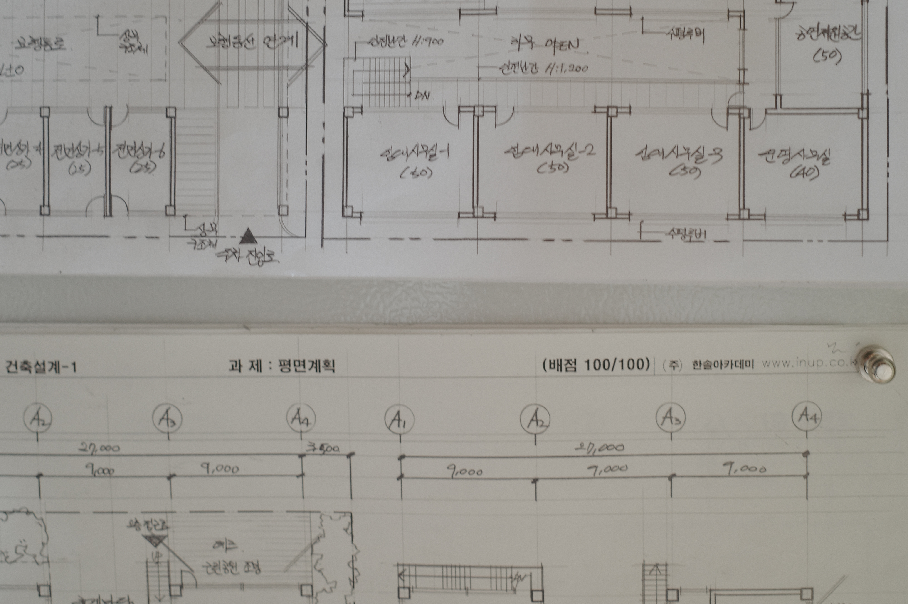

G-ARCH PROJECT

우리가 얼굴은 모임에서 종종 봤어도 깊은 얘기를 해볼 일이 잘 없죠. 같이 어린 시절부터 천천히 얘기를 해볼게요. 어린 시절은 탄3는 어떤 사람이었나요?
저는 되게 소심하고 겁도 많고 엄마 품에서 못 나오는 애였어요. 엄마든 형이든 아빠든 보호자가 있어야 되고, 친척집을 가더라도 치마폭이나 바짓단을 못놓는 아이였어요.
다른 애들은 또래들끼리 놀라고하면 가서 막 노는데, 어른들 옆에 딱 붙어있는 아이였군요.
그래서 제일 친한 친구, 맨날 같이 다니는 친구가 생기지 않으면 어디 밖에 못 나가고 혼자서 못 다니고 그랬어요.
친구 만드는 데도 좀 시간이 걸리고요?
그렇죠. 힘들더라고요. 이제 커가면서 성격이 바뀐 때도 있었지만 제 기본 성격이 그런 것 같아요. 사람 만나는 거를 힘들어하고 스트레스를 받아요.
사람을 만나서 대하는 게 힘든건가요? 아니면 사람을 만나고 나면 에너지가 금방 떨어지는 건가요?
기가 빨리는 것도 있는데, 어떤 관계를 새로 만들고 하는 그런 거에 신경 쓰는게 너무 스트레스에요. 그래서 대학교 처음 들어가서 대학교 1학년 때는 아예 과 생활을 안 했어요. 군대 갔다 와서 복학을 했는데 다른 애들은 1학년 때 친했던 선배들한테 이것저것 물어보고 자료도 받고 선배들이 와가지고 이것저것 도와주잖아요. 근데 전 아는 선배들도 없고 선배들도 내 이름은 모르고 난 그 자리에서 없는 존재가 돼버린 거죠.
저도 원래 남 도움받고 이런 거를 싫어하고 못하는 성격이거든요. 근데 학교를 다녀보니까 건축과는 특히나 나 혼자서는 힘들고, 주변에서 어떻게 하는지도 듣고 도움도 받고 이렇게 해야 성장할 수가 있잖아요. 저도 처음에는 혼자 낑낑거리면서 해보려다가 안 되니까 스트레스받고 고생한 기억이 나요.
그래서 저는 2학년 때부터 노력해서 외향적으로 지냈어요. 열심히 학교 생활도 하고, 2 3학년 때는 미술 동아리 회장도 하고, 학생회도 하고 그랬어요.근데 지금 졸업하고 사회생활하면서 보니까 그때 제가 참 열심히 E인 척한 I였던 거죠. 저희 아버지가 인상이 험악하셔서 가만히있어도 화내는것 같아요. 저도 그런 외모를 닮아서, 그러지 말아야겠다하고 맨날 웃으면서 다녔어요. 그래서 웃상이다 표정이 좋다 이런 얘기 많이 들었는데, 진짜 많이 노력하면서 산거죠.

어린 시절에 책 많이 읽었다는 얘기도 들었는데, 책을 얼마나 좋아했는지도 궁금해요.
제가 혼자서 만들기 종이접기 하면서 노는것을 좋아했고, 제가 말한 책이라는 게 종이접기 책, 만들기 책 이런 거에요. 어딜가도 그런 책이 많았으니까 초등학교 저학년 때까지 학교에서든 친구 집에 가서든 그걸 책장에서 빼가지고 읽고 있는 거죠. 친구 집에 갔으면 친구랑 놀고 그래야 되는데, 그냥 편한 친구의 집에 가서 편하니까 책을 보고 있다 이런 느낌이죠.
둘이 같이 놀고 막 이런 게 아니군요.
넌 너대로 놀고 있고 나는 나는 책 보고. 그래서 저희 엄마는 그게 쉬웠대요. 어린이날 같은 때에 선물을 사줘야 되는데, 저는 떼도 안 쓰고 뭐 갖고 싶다는 것도 없고 선물 사줘야 하면 종이접기책 이런 거 사주면 되니까 쉬웠다고요.
어린 시절에 본인이 게이인지는 언제 알았어요?
저는 그냥 처음부터 알았던 것 같아요.
날 때부터.
날 때부터. 처음으로 인식을 했던 거는 초등학교 1학년 때인 것 같아요. 남자가 더 편하고 남자 애들이랑 다니는 게 좋고 형들이 멋있다라고 생각을 했어요. 그리고 그게 뭔가 남들과 다르다라는 걸 알아서 티를 안 내고 다녔던 것 같아요.
그럼 여자애들하고는 별로 친하게 지내지 않았어요?
애초에 친구가 많지 않기도 했고, 여자애들이랑 놀러 다녔던 적이 별로 없어요. 중고등학교 때는 남중남고 나오고 학원도 안 다니고 학교에서 계속 야자만 해서 아예 접점이 없기도 했고
어릴 때는 동네에 여자애들이 있지 않았어요?
있었죠. 그냥 있었을 뿐이지만… 제가 얼굴을 잘 못 알아보는 건가라고 생각했던 것도 있어요, 초등학교 때한 반에 한 45명 정도 됐는데, 제가 여자애들 얼굴을 구분을 못 했어요. 같은 반인데도 너무 관심이 없어. 심지어 얘네들은 작년에도 같은 반이었는데 이미지가 비슷한 애들은 구분을 못했어요. 지금 생각해 보니까 내가 얼굴을 기억 못하는 게 아니라 여자에겐 관심 없는 사람이구나 싶죠.
식이 안되면 잘 기억을 못하나요?
남자는 관심 있든 없든 특징이 지어져요. 근데 여자는 그냥 머리 길고 끝인거죠. 저랑 진짜 친하거나 아니면 뭐 키 엄청 크거나 체격이 남들보다 크거나 안경을 쓰거나 이런 특징이 없으면 구분을 못 했어요.
그렇군요. 다시 건축이야기로 돌아가서 제 생각에는 종이접기나 만들기를 좋아했으면 자연스럽게 건축에 관심이 있었을 법도 한데 그렇지 않았다고 하더라고요.
건축은 수능 준비하면서 진로 고민을 할때 알게 된 거고, 저는 초등학교 중학교 고등학교 내내 미술을 하고 싶어 했어요. 그래픽 디자인을 하고 싶었는데 부모님 세대 때는디자이너는 앙드레김밖에 아는 사람이 없었고요.
극단적이네요.
저희 부모님이 어렸을 때는 건축이 유망한 산업이었으니까 그쪽으로 가라고 이야기를 하셔서 수능 거의 막바지에 건축으로 진로를 정했죠.
만드는 걸 좋아했으니까 학교 다니면서는 설계를 좋아했을 법도 한데, 또 설계를 별로 좋아하진 않았다고 하더라고요.
모델 만들고 이거 패널 만들고 이건 너무 적성이랑 잘 맞는데, 건축 설계를 하는 프로세스를 이해 못하겠더라고요. 컨셉이 왜 나와야 되는지도 모르겠고, 왜 사람들의 행동이 이렇게 간다라고 왜 멋대로 판단을 하는지 이해를 할 수가 없었어요. 휴식 공간을 만드는 과제를 하는 데, 휴식 공간을 만들 거면 편한 소파, 좋은 뷰에다가 막 침대 있고 아늑하면 되는 거 아닌가 싶은데, 친구들은 명상을 어떻게 하고 꿈을 형상화하고 이런게 제가 볼 때는 구체적이지 않고 뭔지 모르겠는 거죠.
이야기를 들어보면 계획하는 것보다는 만드는 걸 좋아하고, 디자이너보다는 메이커에 가까운 성향인 것 같아요.
맞아요. 대학교를 준비할 때도 중간에 패션디자인학과를 써보려고 했어요. 왜냐면 저도 ‘내가 미술이 좋은 게 아니라 만드는 걸 좋아한다’는 거를 알고, 입시야 미술로 하겠지만 나중에 먹고 살려면은 내가 만들어야 되지 않을까해서 손으로 직접하는 패션디자인학과를 가야겠다 생각했죠.
가구 이런 것도 잘 맞았을 것 같아요.
좋아했을 것 같은데 한 번도 접해본 일이 없네요.
그럼 설계 말고 특별히 좋아하는 수업같은건 없었어요?
지금 생각해보면 사실 건축과에서 재미있게 할수있었던게 많았어요, 그때 이런 이 프로젝트 했을 때 이렇게 해가지고 정말 재미있게 할 수 있었고, 그때 학교에 3D프린터 레이저커팅기 같은 기구들이 있었으니까 이렇게 할 수 있었는데라는 걸 이제 와서 깨닫지만, 당시에는 전혀 흥미를 못 느끼고 그냥 하는 데 급급했어요.
건축과에서 시키는 것만 하고 따라가는 것도 바쁘긴 하죠,
맞아요. 과정이 빡빡하고 양 자체가 많으니까 그냥 따라가기 벅차고 바빴죠, 5학년 1학기에 설계가 끝나면 졸업전시를 하고 5학년 2학기는 포트폴리오 수업을 하는데, 그때 처음으로 제 작업을 한 거에요. 졸업하고 그래픽 디자이너로 내가 일을 하고 싶으니 건축 전공을 녹일 수 있는 그래픽 작업을 해야겠다라고 고민을 하면서 단면으로 타이포그라피를 만드는 작업들을 했어요.
도중에 휴학하거나 이런 적은 없었어요?
없었어요.
중간에 한 번 쉬어가면, 가끔은 너무 놓쳐버리는 경우도 있지만, 다시 자기의 속도를 다시 찾아가는 경우들이 있는데 5학년 2학기때 재미를 찾았다는 건 안타깝네요.
그래서 조금 고민을 했던 게, 교수님한테 말씀드려가지고 수업 누락을 해서 졸업을 늦출까도 생각했어요. 왜냐하면 학생으로서 받을 수 있는 혜택들이 많이 있으니까. 근데 겁이 났던 거 같아요. 흐릿하게만 뭔가 있지 구체적인 목표가 없으니까 그런 상태에서 늦춘다는 게 확신이 없었죠.
아까 단면으로 타이포그라피를 한 거에 대해서 알려주세요. 디자인 회사에 가기 위한 포트폴리오를 만들려고 시작한 건가요?
그렇죠. 제가 원래 포켓몬이나 카드캡터 체리처럼 비슷한 것들을 모아놓을 수 있는, 컬렉션이 될 수 있는 것들을 좋아해요. 시리즈나, 어떤 것의 연장선이 되는 것들을 모으는 걸 좋아해서, 그런 걸 생각해보니, 제가 편하게 작업할 수 있는 게 타이포그라피였어요.
단면으로 만들었다고 했는데, 기존 설계 작업에 있던 단면들로 만든 건가요? 아니면 임의의 형태를 따라서 단면을 구성한 건가요?
안 그래도 제가 청소하다 보니까 아직 모델이 있더라고요. 제가 이걸 10년을 가지고 다녔어요.

유물 상자 같아요. 알파벳을 만든거네요.
그때 그래픽 작업을 하면서 제가 되게 좋아했던 게 아트토이를 되게 좋아했거든요.내가 할 수 있는 게 뭘까를 고민하면서 제품화할 생각으로 페이퍼 토이 작업을 해보려고 했던 거죠.
이건 쌓아서 붙인 건가요. 귀여워요.
건축하는 사람들 입장에서는 흥미롭잖아요. 그래서 교수님들이 되게 좋아해 주셨었어요.
안에 공간들도 스킵플로어도 있고, 중간에 튀어나온 공간도 있고, 들어간 공간도 있고 재밌네요.
이 작업할 때가 제일 저다웠어요. 학교를 다니면서 그렇게까지 고민을 하고 연구를 하면서 작업을 했었던 적이 한 번도 없었다는 걸 알았죠. 시행착오가 계속 나오니까 이런 식으로 가면 안 되겠다하면서 발전시키면서 전체 디자인에 대한 기준이 생기더라고요.
그런게 스터디모형의 역할이죠. 이건 또 재료가 다르네요. 골판지인가요.
재료도 뭘 해야 되는지를 계속 스터디를 해봤죠.
외장 마감 같아요.
그쵸. 이렇게 쌓아 놨을 때 나무처럼 보여지니까요. 그때 이 작업을 페이스북에 올렸다가 좋아요가 2천 개가 넘게 달렸어요.
그냥 건축 모르는 사람들이 봐도 재밌을 것 같아요.
건축 아닌 사람 그래픽 하는 사람들한테는 건축이라서 재밌고, 건축하는 사람들한테는 그래픽작업이라서 재밌는 거죠. 그때 기획사에서 연락이 왔었어요. 작가로 계약해서 작업을 진행했으면 좋겠다 이런 연락들이 왔었고 계약도 하고 진행은 했었는데, 먹고 살기가 급급하다 보니 여기서 조금씩 조금씩 멀어졌어요. 이때 더 끌고 나갔어야 되지 않았나라는 생각을 많이해요.
그러면 이것 때문에 디자인 회사를 다니게 된건데, 이 작업이랑은 별개인 건가요?
이 작업은 졸업하기 전에 연락이 와가지고 계약을 했고, 그리고 연말에 취직을 하면서 회사를 다녔어요. 취업한 곳은 조그만 스튜디오라서 부부가 운영하고 직원 한두 명 있는 종이로 제품을 만드는 회사였어요. 이 작업은 회사 다니면서 같이 했어요.
그러면 일단 디자인 회사 얘기부터 해볼까요? 그 디자인 회사에 취직한 계기는 어떻게 되나요? 공고를 보고 지원한건가요?
채용공고는 없었는데, 학교 다니면서 종이로 모형을 만든 걸 어필하면서 당신네 회사에서 일하고 싶습니다 하고 먼저 메일을 보냈어요. “당신네들이 최근에 사람을 뽑았다는 건 아는데 내가 이런 작업을 했고 관심 있다 같이 거기서 일하고 싶다” 이렇게 연락을 해서 회사를 다니기 시작했어요. 회사가 작업은 정말 많이 좋았어요.
거기는 얼마나 다녔어요?
6개월을 다녔어요. 금방 나온 이유가 뭐냐하면 부부가 오너인데, 남편이 회의하다가 아내한테 심한 욕을 막 해요. 아내분도 거기에 지지않아요. 직원들앞에서 회의하다가 그러는 수준이면 직원들한테는 어떻게 대했겠어요.
대표가 직원들한테도 욕을 했어요?
그쵸. 그게 잘못된 거를 모르시더라고요. 근대 저는 회사는 원래 이렇게 다니는 건 줄 알았어요. 그리고 정말 너무 하고 싶었던 일이고, 일이 너무 좋으니까 울면서 다녔어요. 새벽 3시 4시까지 울면서 회사 가기 싫다고 생각하면서 밤잠 설치다가 잠들고, 출근하면 지하철 타고 가서 지하철역에서 마지막 순간까지 기다리다가 회사에 들어갔죠.
고생을 많이 했네요.
그때 트라우마가 생겨서 그 이후로 누가 제 이름 석자를 부르기만 해도, 심장부터 떨리더라구요. 그게 고쳐지는 데 4~ 5년이 걸렸어요. ‘너 이거 작업 왜 이렇게 했어?’라고 하면, 정말로 왜 이렇게 했는지 물어본 건데 저는 지금까지도 왜 이따위로 작업을 했냐고 다그치는 걸로 받아들여져서 겁부터나요.
너무하네요. 이렇게 여린 탄3한테
울면서 그만뒀죠. 결정적으로 그만둔 이유는 제가 회사 외에도 따로 타이포그라피 작업을 하고 있었잖아요. 너 회사에다가 올인할 수 있는 거 아니면은 그만둬라. 어디 개인 작업을 하냐 그래서 한 3일 울면서 보냈죠. 그때당시에 제가 버티는 힘은 제 작업이였고, 이것조차도 안 하면 나는 여기서 살 수가 없겠더라고요. 그래서 그만뒀죠.
그러면 그만두고서 타이포그라피 작업을 본격적으로 한 거에요?
그런 건 아니고, 그때 도망치듯이 건축을 하게 되었어요. 겁이 났어요. 왜냐면 제가 취업했을때 어머니가 굉장히 미안해하셨거든요. 아들이 그렇게 디자인하고 싶어 하고, 평생 동안 본인이 반대했는데도, 자기 혼자 디자인회사를 취직하니까 너무 미안해하셨어요. 그래서 첫 회사에 취직할 때, 아버지 퇴직금을 가지고 서울에다가 방을 얻어주셨던거죠. 근데 그 기대를 제가 깨버렸잖아요. 제가 회사를 도망치듯이 나왔으니까요. 회사 생활은 원래 그렇게 해야 되는데 그것도 못했다고 생각해서, 바로 설계사무소를 다녀야겠다 생각했죠.
부모님이 그렇게 해 주셨는데 내가 도망치듯 나왔으니 빨리 다시 회사를 가야겠다 생각했군요.
그렇죠. 나는 디자인을 했다가는 또 굶어 죽을 거다. 나는 못하는 애니까. 그래서 본가에서 한 30분밖에 안 걸리는 충남 당진에서 설계사무소를 다녔어요.
본가에서 출퇴근을 한 거네요? 얼마나 다녔어요?
처음에만 그렇게 하다가, 나중엔 방을 얻었어요. 1년 정도 다녔어요. 소장님이 여자들이 술 따라주는 집을 좋아했어요. 전 어떻게 해야 될지를 모르겠는 거죠. 그래서 철저하게 저는 그런 거 너무 싫어해요 이렇게 했죠. 근데 야 남자들은 그런 거 다 좋아해 너 왜 그렇게 이상하게 나오냐고 적반하장으로 나오시는 거죠. 그게 제일 큰 퇴사 이유에요.
어떻게 1년이 다녔어요?
1년은 채워야 한다고 생각했어요. 왜냐면 저는 이미 6개월 하다가 도망쳤으니까 1년은 있어야 한다고 생각했죠. 1년을 버티고, 납득할 핑계가 있어야 하니까, 그 얘기를 부모님께 했죠. 그래야지 제가 거기를 떠날 수가 있으니까.
이야기를 들어보면 일을 그만둔다고 해서 부모님이 혼을 내시진 않을 것 같은데요.
오히려 과하게 애정이 있으신 편이죠.
분당으로 이사해서도 건축 설계 사무실을 다닌거죠?
설계 사무실을 먼저 취업을 해놓고 나서 올라왔어요. 판교 운중동에 있는 사무실을 다녔는데, 작업도 괜찮은 것 같고, 면접을 붙은 다음에 여기로 이사를 왔어요. 거기서 2년 반을 있었고, 좋게 헤어졌어요. 회사들을 그만두는 가장 큰 이유는 항상 내가 망가졌구나, 지쳤구나라고 번아웃이 왔을 때인 것 같아요.
그 다음에 다닌 회사가 마지막 회사인가요?
또 있어요. 제가 첫 회사에서 진득하게 있었으면 제가 너무 쫄보라서 퇴사하는 게 겁났을텐데, 첫 회사에서 한 번 크게 데이고서 나와보니까 그건 나오는 게 맞았구나라는 걸 알았잖아요. 그래서 아닐 때는 나와야겠다 이렇게 된거죠. 그다음 회사는 이제 문정동에서 이제 작가님으로 불리시는 사무실을 갔어요.
작가님이라고 불리는 사무실이라는게 무슨 차이인가요?
tv에서 불러주고 잡지에서 불러주고 이제 클라이언트가 기다려주는거죠. 이전 회사에서도 우리는 작업을 되게 잘한다고 생각했는데, 클라이언트 하나가 미팅을 다 하고 나서 자기는 근데 이거 설계를 작품하는 사람한테 맡겨야 되겠다 하고서 우리랑 계약을 안 한 일이 있었어요. 그래가지고 상처받았죠. “소장님 저희 작품하는 데 아니에요?” 하고 물었던 기억이 있어요. 우리 되게 열심히 작품했다고 생각했는데 아니었나 봐요.
당황스럽긴 하네요. 여기서 문정동까지 출퇴근한건가요?
여기서 문정동까지 출퇴근하다가, 이제 작가님이 ‘야 내가 작가인데 너 나한테 왜 이렇게 대접을 안 해?’
진짜 스스로 자기를 작가라고 얘기한건가요? 충격적이네요.
그래도 작업적으로 훌륭하고 설계하는 거 얘기하다 보면은 디테일을 어떻게 짜야 되는지 이런 거 얘기하면 너무 배울 게 너무 많았어요. 근데 회의하다가 화나면 손찌검 하는 시늉을 하더라구요. 세달정도 있다가 “소장님 그러시는건 선 넘으셨습니다.” 하고서 그만뒀죠,
그럼 그 이후에 최근까지 다녔던 마지막 회사로 간 건가요?
네. 마지막으로 다녔던 회사는 면접을 보고 느낌이 너무 편안했어요. 더 이상 사람한테 데이고 싶지 않았을 때 였거든요.작업이 그렇게 좋은 곳은 아니었는데, 소장님이 너무 마음을 편하게 해 주시고 그러니까 오래 다녔죠.
마지막 회사도 번아웃이 와서 그만둔건가요?
지금 건축 경기가 너무 안 좋잖아요. 소장님이 대형사무소 출신이셨던 분인데 기존 사무실에서 받아오는 일들을 많이 했어요. 일을 받아왔는데, 아무리 봐도 4-5명이서 달라붙어야 되는 일인데 두 명치 돈만 준다는 거에요. 그러면 ‘우리는 그거 못해요’하고 물리적으로 안 되는 거는 쳐내야 되는데 업계 상황이 너무 안 좋으니까 그거라도 받아야 되는 거죠. 나중에 알았는데 그때 그 일을 받지 않았으면은 다다음 달에 회사가 폐업을 해야 되는 상황이었어요, 결국 그일을 진행하니 제가 PM이 아닌데도 초과근무가 90시간이 넘게 찍히더라구요.
90시간이면 한 달에 22일 일한다고 했을 때 거의 하루 평균 4시간 이상이네요.
그렇게 세 달을 일을 하니까 죽어나는 거죠. 그리고 연봉 협상도 실질적으로 동결 수준이어서 실질적으로는 받는 돈이 줄어들었어요. 그리고 회사가 일을 잘하는 회사가 아니었으니까 여기서 더 있으면은 이건 내 경력이 큰일 나겠다 싶었죠. 이제 중간 연차가 됐는데 이 회사에 있던 4년차부터 8년차까지 준공된 게 없어요.
작업으로 포트폴리오라고 할 만한 게 좀 애매하군요.
이건 포트폴리오에 넣을 수 있겠다라고 생각했던 작업들은 전부 다 허가만 나고서 PF가 진행이 안돼서 캔슬이 났어요. 회사도 성장을 하려고 했는데 큰일인 거죠. 계약은 했는데 일은 계속 딜레이가 되니까 뭔가 일은 계속하는데 돈이 들어오지 않으니까요.
지금까지 과거에 대해 얘기했다면, 이제는 미래에 대해서 얘기해볼게요. 건축사시험 준비를 하고 있는 걸로 알고 있는데, 건축사 준비를 하는 이유가 뭔지 궁금해요. 자기 사무소를 하려고하면 건축사 자격이 필수지만, 모두가 자기 사무실을 하는 것은 아니고, 실무에서 쓰지 않는 손도면으로 시험을 치루다보니 시험을 위한 공부를 완전히 새롭게 해야하잖아요. 그리고 시험을 공부하는 사람들마다 건축사 이후에 무엇을 할지에 따라서 그 목적이 다르더라고요.
저는 정말 목적이 없어서 하는 거예요. 제가 지금 뭘 해야 되는지 모르겠어요. 제가 건축에서 안정적이라고 생각하는 부분은 건축은 어쨌든 졸업하고 경력을 쌓아서 시험 공부를 해서 시험을 본다는 목표가 있다는 점이죠. 수능처럼 내가 이거에 대해서 크게 고민하지 않고 꿈이 없어도 그냥 가야 될 길이 정해져 있으니까 그게 편했어요. 그리고 지금 건축을 안 할 수도 있겠다라는 마음가짐을 가지고 퇴사는 했지만, 아직 뭘 해야 될지 모르겠어요. 그래서 하고 있는 거에요. 뚜렷하게 가야할 진로가 없으면 할 수 있는 거 해야죠.
그것도 되게 목적이죠. 목적이 건축사를 따서 뭘 하겠다 이런 목적이 아니어도, 지금까지 해온 게 있고 내가 그다음에 뭘 해야 될지 모르니 차근차근 원래 내가 생각했던 스텝을 밟아나가는 거군요.
그렇죠. 그리고 우스갯소리로 설계 그만두려면 건축사는 따야지하는 말을 하잖아요.
건축사를 따면 생각보다는 건축사 라이센스로 다른 영역으로 가는게 수월해지는 면도 있는 것 같아요.
전 이번이 마지막이라고 보고 있어요. 한 과목 남았는데 과목 유예가 마지막이에요. 이제와서 보면 회사 다니면서 학원을 다닐 때랑 지금이랑 비교해보니까 회사 다닐 때는 아무것도 안 했던 수준인 것 같아요.
그래도 용케 두 과목을 붙었네요.
그거는 공부해서가 아니라 짬인 것 같아요. 건축 최대 가능 영역이랑 구조 부분은 제가 공부를 하지 않고도 이만큼까지 일했던 짬이 있기 때문에 그 경험치로 붙은 거지 제가 공부를 해서 붙은 게 아닌 것 같아요.
그럼 지금은 학원을 다녀요?
등록은 했는데 전체 과목 강의 듣는 사람을 우선으로 해서 한 과목 문제풀이만 하려면 자리가 잘 없어요. 일단 등록을 해서 6월달부터 할 예정이고, 지금은 요 앞에 스터디 카페에 양해를 구해서 하고 있어요. 제도판 같은 걸 막 갖다 놓고 해야 되는데 해도 되냐고요.
출근하듯이 스터디 카페 가서 공부를 하는 거에요?
스터디 카페를 간 지는 생각보다 얼마 안 됐고요. 퇴사하고서 생각보다 바빴어요.3월 달까지는 학원을 다니고 시험 공부를 하니까 바빴고, 그 이후에는 본가 가가지고 부모님 도와드리고 묘하게 할 게 많더라구요. 이제 3월 시험 결과 나오고 나서 다시 조금 더 쉬다가 이제 다시 시작을 했어요.
그럼 평소에 집에서 하루 일과는 어떻게 돼요?
백수로 있으면서 건강 상의 이유로 집에서 삼시 세끼를 다 먹으니까 집안일이 많더라구요. 회사를 다닐 때는 일주일에 한 번 몰아서 빨래를 하고 나 설거지하고 청소하면 됐는데, 지금은 설거지거리가 3배 4배가 나오고 운동도 계속 가고 있으니까 운동복도 그거 다 빨래하고 이러니까 장난 아니더라고요. 아침에 스터디 카페 갔다가 집 와서 밥 먹고 다시 스터디 카페에서 갔다가 집에 돌아오고 그리고 저녁 때는 저녁 먹고서는 근처사는 대학 친구랑 운동을 하고 있어요.
사람은 안 만나요?
보통은 거의 안만나다가 이제 좀 나가고 있어요. 그래서 지아키에 가입하고 1년동안 안 나가다가, 최근에 꾸준히 나가고 있어요. 제가 크로스핏 같은 걸 너무 좋아하는데 크로스핏이 좋은 게 운동은 혼자 하는데 다른 사람들이 하이파이브를 해주거든요. 그정도면 저의 사회생활은 충분하더라구요.
그러면 일적으로 새로 해보고 싶은 게 있어요?
아직은 쉬면서 진로를 정하는 시기인 것 같아요. 내가 처음에 디자인 회사를 갔을 때는 내가 하고 싶은 게 명확하게 있었고 내가 뭘 해야 되는지를 알았었는데 지금은 내가 뭘 하고 싶어 하는지 뭘 해야 되는지를 모르겠어요. 좋아하는 게 뭔지도 모르겠고 내가 잘하는 게 뭔지도 모르겠고 근데 이건 안 되겠다 싶어서, 정말 그러면 안 되지만 이건 안 되겠다 싶어서 대책 없이 나온 거거든요. 내가 쉬는 기간 동안 열심히 나를 찾아보고 못 찾겠다 하면 다시 건축을 가야 되겠다 그렇게 생각을 하고 있어요.
혹시 생각하고 있는 다른 분야도 있나요?
마지막으로 제가 퇴사하기 전에 관심 있게 봤던 광고들은 이런거에요. 코로나 이후에 그룹 운동하는 업체들이 되게 많이 늘어났잖아요. f45나 버핏 그라운드 이런 데들이 있는데, 그런회사들도 공간 매니저를 뽑더라고요.
회사 자체 공간팀에서 프랜차이즈 공간을 만드는 거죠?
그렇죠 제가 건축을 좋아해서 하는 게 아니다 보니까 그런 가지치기를 전혀 관심을 안 가지고서 보지도 않고 있었는데, 재밌겠다라는 생각이 들어요.
그런 회사들도 채용 시에 건축사가 있는 걸 더 우대하는 경향이 있죠?
그쵸. 그래서 어떻게든 따야 되는 거에요. 경력이 아까운 것도 아까운 건데 뭐라도 하려면 그래도 하나라도 있어야 되니까요.
일을 쉬는 동안 이루고 싶은 혹은 되고 싶은 마음의 상태나 목표가 있을까요?
첫 번째로는요. 제가 지금은 근육량이 33인데요. 40이 되고 싶어요. 40 넘는 멋진 근육 오빠가 되고 싶은데요.
33과 40은 차이가 크지 않나요? 그게 단기간에 되는 게 아닐 텐데요.
꿈이니까 그랬으면 좋겠다는 거죠. 건강 챙긴다라는 의미로 말한거고, 가장 큰 목표는 진짜 나를 찾는 거예요. 뭘 해야 되는지를 모르겠어요. 이전에 좋아했던 것들을 안 된다고 배제하고 나니까 내가 좋아하는 것도 없는 무색 무취의 사람이더라고요. 그전에는 중요함을 몰랐는데 내 안에 굳은 심지가 없으니까 내 인생이 어떻게 가야 되는지를 전혀 알 수가 없더라고요. 그래서 심지를 찾자가 이 쉬는 것의 목표입니다.

마지막으로 집에 대한 이야기를 해볼게요. 지금 살고 있는 집에 대해서 간단한 소개 해 주세요.
지금 집은 들어오면서 보셔서 아시겠지만 불법 건축물이에요. 건축물 대장 떼보면은 근린생활시설로 돼 있고, 복도 끝에 현관문 하나 있고 그 안에 문이 세 개 붙어 있어요. 근데 뭐 전입신고도 잘했고 월세도 싸게 받고 있고 좋아요. 남향에 옆 건물이 떨어져 있어서 햇빛도 잘 들어오고, 제 방 침대 보면은 침대 머리 맡으로 하늘이 보여서 좋아요
누워서 하늘을 보는군요. 보통 분당하면 신도시 대단지 아파트를 생각하는데, 여기는 아파트는 아니고 아파트 단지들 사이에 있는 상가 건물에 있는 집인데, 사시기에는 좀 어떤가요?
동네는 너무 마음에 들어요. 화곡동 반지하에 살 때는 문 열면 도로니까 창문 먼지 때문에라도 문을 못 열었어요. 그런데 지금은 도시 한가운데 공원도 있고, 탄천도 흐르고 있고 이러니까 살기가 너무 좋아요.
원래 어렸을 때 살던 집은 어땠어요?
저는 아파트에서만 쭉 살았어요. 전라남도 여수에서 태어났고, 거기서도 아파트를 한 번 이사를 했어요. 제가 태어났을 때는 이제 13평짜리 연탄 때는 아파트였는데 제가 태어나서 퇴원하고 누워있는 걸 보고 아버지가 집에 누울 자리가 없구나 생각했대요. 그래서 아버지는 이제 집을 더 키워나가야 된다고 생각하셨다 더라구요. 그래서 대출을해서 아파트 계약했고, 그걸 한 번 겪어보시니까 집을 점점 더 넓혀가야 되는구나를 일찍 깨달으셨대요.
탄3님 지금은 전세를 주고 있는 집을 매입한 것도 아버지가 도와주셨다고 들었었어요.
자금 컨트롤을 전부 다 아버지한테 맡긴 거예요. 아버지가 그런 걸 좋아하세요. 처음에는 반발심에 아버지께 제가 알아서 할게 했다가 아무것도 못 알아보고, 결국 아버지께 다 위임했죠.
아버지한테 감사해야겠네요.
어릴적부터 쭉 아파트에 살았고 아버지 직장 맞춰서 이사 다니고 이런 정도에요. 여수에서 살다가 부모님이 두분 다 조치원 한 동네에서 자라셨고, 집성촌이거든요. 피는 조치원인데 내가 태어난 건 여수고 근데 학교는 천안에서 다니고 지금 본가는 아산으로 이사 왔고, 학교는 청주에서 다니고, 서울 갔다가 당진 갔다가 막 이러면서 꽤 많이 왔다 갔다 했어요.

지금 집에서 이사 추후에 이사 갈 계획이 있는지 궁금해요.
일단은 지금 동탄에 전세 준 아파트로 아마 내년에 이사를 갈 것 같은데, 여유가 되면 이제 하나 더 투자 목적으로 구입할 생각도 있고, 근데 안 될 것 같다고는 생각은 되는데 그때까지 이제 여러 가지 상황을 보려고요.
아직 어디로 갈진 모르지만, 이사를 가게 되면 어쨌든 아파트로 갈 것 같은데, 아무래도 지금보다 집도 좀 넓어질 거잖아요. 지금 집은 거실 하나 침실 하나 이렇게 있어서 용도별로 공간이 잘 분리되지 않았잖아요. 집을 옮기게 되면 어떻게 집을 쓰고 싶은지 그게 궁금해요.
제가 필요한건 처음에는 드레스룸이라고 생각했는데 드레스룸이 아니라 펜트리가 필요하더라고요. 옷은 어찌 됐든 제가 컨트롤이 되는데, 식자재가 컨트롤이 안 돼요,
집을 보니까 음료수도 쌓아놓고 사고 이런 성향인 것 같아요. 전쟁이 날 걸 대비해서 그런 건가요?
쌀 때 사는 거죠. 혼자 사니까 싼 거 사야 되니까 대량으로 사면 대량으로 사면 싸고 하니까요. 제가 지금 일을 쉬면서 집에서는 보내는 시간이 많잖아요, 집에 물건이 쌓이고 정리하는 시간이 길어지고 하니까, 펜트리 같은 공간이 좀 필요한것 같아요. 지금 제방은 주방 겸 거실 겸 팬트리 겸 옷장을 겸하고 있으니까요, 좋은 주방과 좋은 거실이 있으려면은 펜트리가 있어서 거기다 모든 짐들이 다 들어가야하는거죠. 그리고 방보다 베란다가 있었으면 좋겠어요.저는 옛날 아파트들에서 계속 살아왔기 때문에 빨래가 방에 있는 게 너무 싫어요. 걸레를 빨아서 방 안에다 놔야 되는 것도 싫고요.
이 집에 6년을 살았다고 하는데혼자 살기에 아주 작은 집은 아니지만 원래 집으로 계획하고 지어진 집이 아니어서 그런지 몰라도 베란다도 없고 수납할 공간들에 대한 고민이 좀 부족한 것 같고, 그래서 더 그렇게 생각하는 것 같네요.
본가에서 나와서 집을 구해보니 베란다 있는 집들이 잘 없더라고요.
요새는 사실 아파트도 다 확장을 기본으로 하니까 잘 없죠.
맞아요. 지금 본가도 부모님은 베란다를 거실 확장을 하고 싶었는데 저는 베란다가 어쨌든 마당 같은 개념으로 계속 있었으면 좋겠어요. 지금 본가는 베란다에도 반은 이제 마루 깔아놓고서 거기서 그냥 앉아가지고 빨래도 갤 수 있고 뭐 그렇거든요. 전 그런 공간들이 좋더라고요.
나중에 시골집에서 사는 꿈을 꾸고 있다고 들었는데 시골에서 사는 게 꿈인 이유가 궁금해요. 지금 얘기를 들어보면 지역은 서울 밖에서 돌아다녔을지언정 아파트에만 산 것 같은데 어떤 시골집을 생각하는 거에요?
이게 건축적인 부분에서는 저도 단독주택을 지어서 살고 싶긴 한데, 그거랑 별개로 제 고향 시골 지역, 내 집성촌인 그곳에 살고 싶다는 거에요. 저는 종교가 없어요, 그곳에 가면 선산이 있고 조부모님, 증조부모님 묘가 있거든요. 저희 아버지는 집안에 큰 일이 있고 걱정이 있으면 저를 데리고 가서 그 묘에 있는 풀 깎고 술 한잔 뿌리면서 탄3이 이번에 시험 보는 거 잘 되게 해주세요 이러셨거든요. 지금 보면 그게 제 종교인 거죠.
그렇죠
시골 그 마을이 한 30채 정도가 있으면 그중에 6채가 우리 친척이에요. 그래서 명절 때 되면 우리 집이 제일 큰 집이라서 우리 집부터 해가지고 쭉쭉쭉쭉 내려오면서 차례를 지내요. 저는 그 추억들이 있는 그곳에서 계속 살았으면 좋겠어요. 그리고 게이지만 저는 제 자식이 그 감정을 똑같이 이어갔으면 좋겠어요. 저는 그 아버지랑 풀 베고 따라다니고 이랬던 순간들이 너무 소중하고, 그 소중한 순간을 내 자식이 느꼈으면 좋겠어요.
참 어려운 일이네요.
그러니까요.
위에서 아래로 이어지는 가족의 대를 이어가고 싶으시다면 뭐 어떻게든 한번 낳아보세요.
착상이 안 되더라고요
탄3 한테는 가족이 되게 중요한데 가족들하고는 이제 이쪽인 걸 터놓고 얘기하지 않죠?
얘기한 적 없죠. 사실 들켰지 않았을까라고 생각하는데 왜냐하면 야동을 들킨 적이 있는 것 같은데 애써 모른 척을 하시는 것 같기도 해요.
가족들한테 커밍아웃하지 않고 있을 때의 부담감이 가족과 친밀하지 않아도 있겠지만, 가족이 되게 중요한 사람이면 좀 짐처럼 있을 것 같아요.
20대 중반 20대 후반까지는 괜찮았는데, 지금은 결혼할 나이라 한참 넘어가고 있으니까 정말 많이 부담이 되죠. 그것 때문에 점점 더 집에다가 연락 안 하고 하는 것들이 생겨요. 계속 모든 걸 할 때마다 결혼하는 걸로 연관 시키시니까.
부모님도 가족을 중요시하는 성향이 크면 더 그럴 수 있겠네요.
만약에 제가 처음부터 나 결혼하기 싫어 비혼이야 애 싫어 막 이러고 다녔으면 모르겠는데, 전 너무 가정적인 사람이고 애기 너무 좋아하고 내가 가정을 이루고 싶어 하는 거를 안 숨겼거든요. 이런 날이 올 줄 몰랐어요. 저는 아버지랑 주말마다 목욕탕 가지고 등 밀어주고 그런게 너무 즐거웠거든요, 저도 제 아들이랑 그러고 싶어요. 내 등 밀어줄 사람이 있으면 좋겠어요. 그 추억들을 제 자식과 똑같이 공유를 하고 싶어요.
사실 저는 언제부턴가는 그런 것들은 내가 할 수 없는 것이라고 단정지어서 아예 그런 상상을 의식적으로 안 하려고 했던 것 같아요. 사실 레즈비언 커플도 아니고 게이커플이 아이를 갖고 하는 것들은 국내에 거의 사례가 없잖아요. 입양을 할 수 있다면 입양을 할 생각도 있어요?
저는 입양을 해서라도 키우고 싶어요. 정말 지치고 힘들고 애 키우기 너무 힘들겠지만 그래도 가능하다면 아이를 키우고 싶어요.
근게 그게 현실적으로 가능하지 않으니까 이제 게이 커플들이 많이들 반려견을 키우기도 하잖아요.
물론 강아지 이쁘겠죠. 하지만 저는 제가 지금까지 얘기했던 그 추억을 공유하고 싶어요. 그래서 진지하게 좀 찾아보기도 했어요. 가정이 있었으면 좋겠으니까. 사실 입양을 한다고 해서 아이를 데려왔을 때 부모님이 좋아하실까? 기뻐해줄 수 있을까? 이부분은 잘 모르겠어요.

인터뷰 진행, 사진 : 택 일러스트 : 택, 탄3